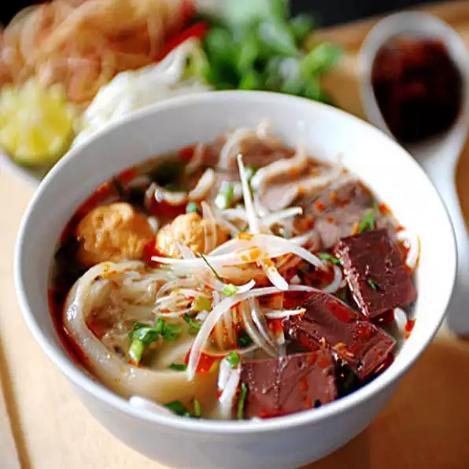

Noodle Recipes

This recipe is my attempt at the famous Vietnamese spicy beef noodle soup, Pho. Garnish with thinly sliced raw beef tenderloin, basil, mint, cilantro, chili sambal, and fresh lime wedges.
Ingredients
- 1 tablespoon vegetable oil
- 2 thick slices beef shank
- 2 pounds beef oxtail, cut into pieces
- 1 (6 inch) piece fresh ginger, sliced
- 6 whole star anise
- 1 (16 ounce) package fresh rice noodles
- 2 tablespoons white sugar
- 6 cloves garlic
- 3 quarts water
- 2 tablespoons fish sauce
Steps
- Heat oil in a large pot over medium-high heat. Cook beef shank, oxtail pieces, and ginger in hot oil, turning occasionally, until browned, 3 to 5 minutes per side. Add star anise, fennel seed, coriander seed, cloves, cinnamon stick, and cardamom pod to the pot and saute until fragrant, about 30 seconds.
- Stir water, onion, garlic, white sugar, and bay leaf into beef mixture; bring to a boil, reduce heat to low, and simmer until broth is flavorful and meat is falling off the bone, 5 to 6 hours. Remove meat and reserve. Strain broth into a pot; discard strained spices and vegetables.
- Chop beef shank meat and add to broth in pot; stir in fish sauce and soy sauce. Bring broth to a simmer and reduce heat to low to keep warm.
- Place rice noodles in a large bowl and cover with hot water. Set aside until noodles are softened, about 5 minutes. Drain and rinse in cold water.
- Place a handful of bean sprouts in the bottom of a large soup bowl. Top with a large handful of prepared rice noodles and drop a few jalapeno slices over noodles. Ladle beef broth into bowl to cover noodles.